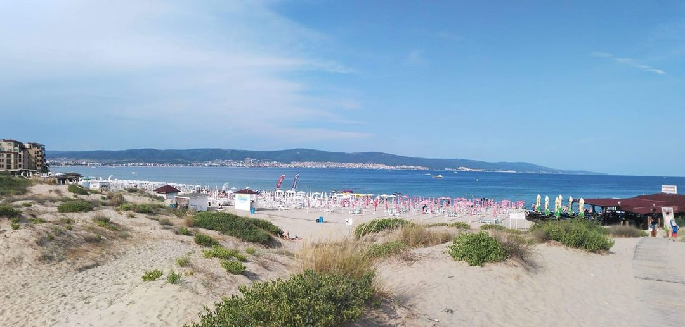

Zbliża się lato 🌻🌻🌷co za tym idzie wyczekany urlop, wakacje, odpoczynek i leniwe opalanie ;🏖️🌅☀️
Pawie każdy lubi beztrosko leniuchować na leżaku i czerpać przyjemność z gorących promieni słonecznych pamiętając o kosmetykach do opalania z filtrem UV.
Wszystko by było OK jakby nie fakt że kosmetyki z filtrem UV zamiast chronić są groźne dla naszego zdrowia ⚠️⚠️⚠️
Ponieważ zawierają bardzo szkodliwe rakotwórcze substancje oraz blokują wchłanianie naturalnej witamnę D ze słońca❗❗❗
Mało kto zdaje sobie sprawę z tego, że już krem z niewielkim filtrem SPF 8 hamuje produkcję witaminy D o minimum 90 procent, a preparat z faktorem SPF 15, aż o 99 procent.
Witamina D3 jest niezwykle ważna dla zdrowia i prawidłowego funkcjonowania organizmu.
Odpowiednia jej optymalizacja może zmniejszyć ryzyko zachorowania na raka nawet o 50 procent.
Podobnie jest z cukrzycą i wieloma innymi chorobami. Co więcej, niedobór witaminy D3 jest groźny dla zdrowia‼️
Hmmm zaraz a co słyszymy w reklamach TV 🤔
że koniecznie musimy zabezpieczyć sie przed słońcem kosmetykami z filtrem UV bo tylko tak uchroni nas to przed rakiem skóry czerniakiem. Niestety jest zupełnie odwrotnie to syntetyczne chemiczne składniki powodują czerniaka a nie ich brak 😱 z drugiej strony czy w TV kiedykolwiek mówiono prawdę 🤔🙄 reklamy są po to by producent zarobił a nie ma to nic wspólnego z naszym dobrem czy zdrowiem.
To właśnie Oxybenzone jest najbardziej niebezpiecznym składnikiem kremów z filtrem.
Jest również jednym z najpopularniejszych składników kremów chroniących przed słońcem, który występujący również pod innymi nazwami:
➡️ Benzophenon-3,
➡️ Eusolex 4360,
➡️ Escalol 567,
➡️ 2-Hydroxy-4-methoxy-benzophenon,
➡️ 2-Hydroxy-4-methoxyphenyl-phenylmethanon.
Składnik ten został poddany szczegółowej analizie i testom, które potwierdziły, że absorber UV nie jest obojętny dla organizmu człowieka. Jest to bardzo toksyczna substancja, która przenika w głąb skóry, dostając się do większości organów ludzkich.
Z przeprowadzonych badań wynika, że kremy zawierające oxybenzone mają istotny wpływ na
zmiany i problemy hormonalne, a także mogą prowadzić do niebezpiecznego zatrucia organizmu❗❗❗
Co objawia się zawrotami głowy, bólami głowy, nudnościami, bądź wymiotami.
Problem jest szczególnie poważny w przypadku kobiet w ciąży, gdyż może prowadzić do niedorozwoju płodu oraz chronicznych chorób dzieci, które się urodzą,przechodzi również do mleka matki.⚠️⚠️⚠️
Ponadto substancja ta uszkadza zdrowe komórki organizmu i przyczynia się do produkcji wolnych rodników prowadząc do rozwoju raka skóry – czerniaka złośliwego.
Naukowcy, pracujący pod okiem dr. Kurunthachalama Kannana z New York State Department of Helath, udowodnili związek pomiędzy zachorowaniem na endometriozę, reakcjami alergicznymi skóry i podrażnieniami na ciele, ze stosowaniem kosmetyków z oxybenzone.
Poza tą najczęściej występującą substancją toksyczną w kremach do opalania, można znaleźć jeszcze kilka innych
produktów, które zamiast pomagać szkodzą należą do nich:
➡️ Parafina (tzw. olej mineralny, olej ropopochodny) czyli związki syntetyczne, pozyskiwane w procesie destylacji ropy naftowej. Pomimo tego, że parafina wygładza skórę i maskuje przebarwienia, to tak naprawdę wyrządza więcej złego. Nie tylko pokrywa skórę trudną do usunięcia powłoką, to przede wszystkim zatyka pory, sprzyja rozwojowi bakterii beztlenowych, uniemożliwia usuwanie toksyn z organizmu, przyspiesza proces starzenia się skóry, zwiększa ryzyko zachorowania na raka skóry.
➡️ Stearynian butylu jest tłustym emolientem, który może powodować powstawania zaskórników, podrażnienia skóry imoże wywoływać reakcje uczuleniowe.
➡️ Hydroksymetyloglicynian sodu jest środkiem konserwującym w kosmetyce, który poza tą rolą nie przynosi nic dobrego. Został zidentyfikowany jako potencjalny alergen, a ponadto wywołuje zaburzenia funkcjonowania komórek skóry,
podrażnienia skóry, podrażnienia oczu, zaburzenia hormonalne, może też przyczynić się do rozwoju raka.
➡️ Oraz parabeny: Methylparaben, Ethylparaben, Propylparaben,Butylparaben,Isobutylparaben,SLS oraz PEGi.
Uważam że najważniejsze jest rozsądne podejście do korzystania z kąpieli słonecznych, nie unikać
południowego słońca, ponieważ w tej godzinie wchłania się największa ilość witaminy D.
Wystarczy zaledwie 10 minut w samo południe by dostarczyć odpowiedni poziom witaminy d3
ALE zawsze z nakryciem głowy i bez chemicznego filtra UV‼️Zastanawiacie się co więc stosować by zabezpieczyć się przed poparzeniem słonecznym 🤔☀️☀️
Najlepszy rozwiązaniem będę kosmetyki ekologiczne ewentualnie mineralne i wszystie oleje zawierająće naturalne filtry UV o których napiszę w kolejnym poście 🌺🌺🌺
